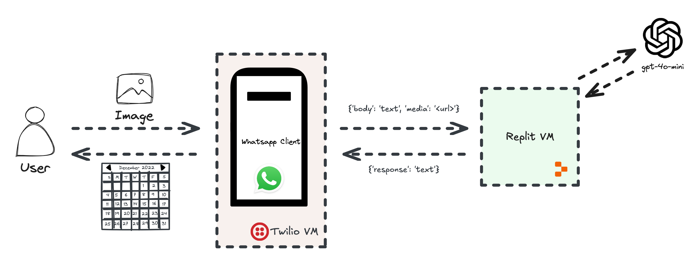
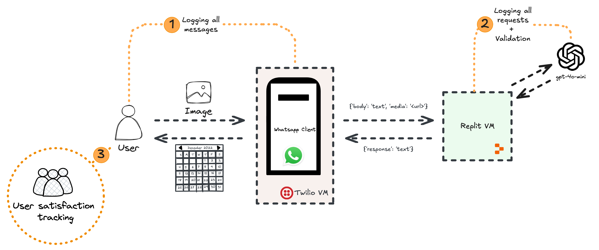
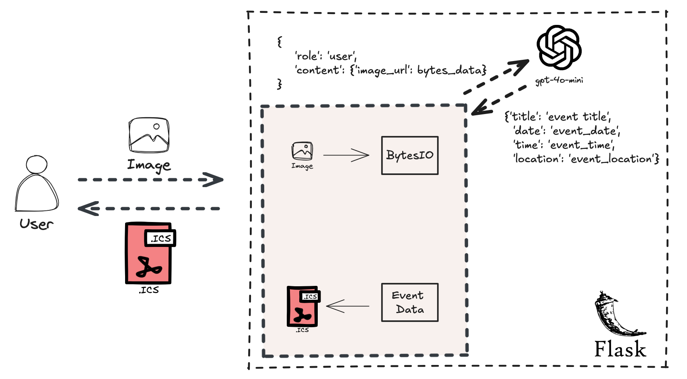
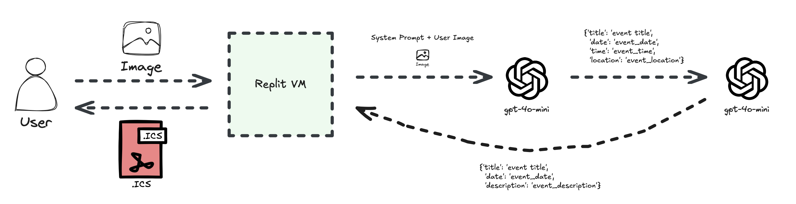

Building a user facing not-for-profit chatbot for a Hindu Temple
A Step-by-Step Guide on building a user facing chatbot with proper evals, logging and monitoring
This blogpost walks you through the process of building a user facing chatbot using a real-world case study of a WhatsApp chatbot for a Hindu Temple. Discover best practices in development, implementation, and crucially, how to properly evaluate your AI application to ensure its effectiveness and reliability.
LLM
Author
Aman Arora
Published
July 28, 2024

Figure 1: Architecture overview of the Hindu Temple Chatbot
As part of this blog post, using a case study of a not-for-profit chatbot that I have recently built for volunteers/attendees at a Hindu temple, I am going to showcase how to properly setup evaluation and monitoring for user facing chatbots.
We will be using gpt-4o-mini as the language model to talk to the users, as this is a self-funded project.
Let me introduce the case study:
The temple I volunteer at hosts multiple events/satsangs every week. The invites are shared as Whatsapp Images amongst the volunteers. Generally, the invites contain some text in Hindi language at the top, title & event information such as address, date, start time, and any additional information related to the event. The more invites one get’s, the harder it is to manage and plan ahead. Since, the invites are images only, it is harder to search for the host names or other information when one forgets the dates. This leads to a frantic search of all invite images in various Whatsapp chats and groups until one finds the right one. Every volunteer has there own way of managing the invites and preparing their schedule. I personally used to manually enter all details in my phone’s calendar and setup appropriate reminders. Another volunteer I know uses a chalk-board to manage all invites, RSVP information and dates.
Given the context, we want to help all volunteers in such a way that use of this app is completely optional without disrupting the usual way of doing everything. So, what if one could just forward the invite image to a WhatsApp Number, and in return get a downloadable calendar invite that has all the required information.
Some key points to note:
The application should be extremely easy to use, because most of the users are elderly Hindus.
The application is free text, in terms of input & output.
The response from the application is a .ics downloadable calendar file, containing all the required information such as title, event date, start time, RSVP details, and any additional information about the event.
The model does not respond to any other requests from the user, and talks in a language that elderly Hindus appreciate. Otherwise, we risk rejection of this application amongst the elderly.
In terms of the tech stack:
We will use Twilio to interact with all volunteers and temple attendees using WhatsApp. Twilio internally uses Webhooks and makes a HTTP request to our application, passing in all the required data. We will build a flask app and use /webhooks endpoint to interact with Twilio. To learn more about how Twilio works, refer here. For the purposes of building an end-user application, we do not necessarily need to delve into the details of Twilio.
The overall architecture of our application has been shared above in Figure 1.
The workflow is pretty straightforward, a User has an option to share text or image with a Whatsapp number (powered by Twilio). Twilio internally sends all data to a webhook, this webhook is made public by Replit which hosts all the code. Once we get the input data from Twilio, we process the image and text, and make a request to gpt-4o-mini accordingly to get a response. gpt-4o-mini handles all the image processing, and returns RSVP information. We use the RSVP information response from gpt-4o-mini, and use icalendar to write a .ics file that is shared back with the User.

Figure 2: Overview of the application with proper logging
In terms of building the application with proper safety and logging, we want to:
Log & monitor all messages from the User and some information about the User such as name, phone number
Log & monitor all requests to gpt-4o-mini, and validate response from gpt-4o-mini.
Evaluate and monitor user satisfaction over time
Regarding user satisfaction tracking, we have multiple options:
Ask the user if they are happy with response or not, and keep track of ELO rating over time.
Ask the user to score the response between 1-5 and keep track of average score over time.
Get text feedback from the user.
The harder part is to validate the responses from gpt-4o-mini. Given an input image, gpt-4o-mini extracts information as a JSON. We could do small checks like:
Check if the JSON response is valid or not
Assert that certain fields are present in the JSON response
Use regex based validation for phone numbers
We can use regex based validation because the application will be used by Users in Australia, thus, we know that all phone numbers should be 10 digits starting with +61 or 04.
Referring to Figure 2, for (1) logging all messages between User and Twilio, we do not need to do much, as Twilio supports this and logs all information regarding users and input messages. For (2), that is, logging all requests to gpt-4o-mini, we will be using LangSmith. While there are other options out there as well, we will use LangSmith for ease-of-use. Lastly, for (3), that is, for user satisfaction tracking, we need a way to record feedback from users via Whatsapp itself. If a user gives a thumbs up emoji to the response, that is a +1, and if a user gives a negative emoji to the response, that refers to a thumbs down.
Any time, we get a thumbs down, we would like to send a follow up message to the user, and get + store their feedback. We will use LangSmith for (3) as well to accumulate a dataset of user response and feedback. Eventually, as the application continues to be used in production, we will continue to accumulate a bigger dataset which will again be stored via LangSmith.
In this section, I will show you in detail on how to let the User interact with our Flask application by passing in Image data, and in return getting a .ics file (calendar format for iPhones) with all the required information.
Once, we have the flask application, we can use it to deploy a public webhook using Replit as was shown in Figure 2. Interacting with gpt-4o-mini correctly is a crucial step in building our application. We want to set the right system prompt, and also pass in the image data correctly.

Figure 3: Overview of creating calendar file from invite image
To chat with gpt-4o-mini, first, we need to provide a system prompt and also user prompt that passes in the event image data. For privacy reasons, I am unable to share the exact system prompt, because it prompt gpt-4o-mini to talk in a tone that elderly Hindus and temple attendees will broadly accept. But a part of the system prompt has been shared below:
"You are a helpful assistant that extracts calendar information from <temple> Satsang invitation images. \Provide all the extracted information in a structured format and start your response <starting_greeting> and end it with <ending_greeting>. \In the extracted information, always try to include host information - it is usually mentioned at the end of the image. \If year is not mentioned, it is {datetime.today().year}. \In your response, only include the starting greeting and the ending greeting with the event information in the middle."
Code
from flask import Flaskapp = Flask(__name__)@app.route("/webhook", methods=["POST"])def webhook(): num_media =int(request.values.get("NumMedia", 0)) message_sid = request.values.get("MessageSid", "") file_path = request.values.get("file_path", "") caption = request.values.get("Body", "").lower() resp = MessagingResponse()if num_media >0: image_data = get_local_image(file_path) result1 = process_image_and_caption(image_data, caption) result2 = process_result(result1) filename, _ = generate_and_store_ics(result1, result2) download_url = request.url_root +f"download/{filename}" result =f"\n\nI've created a calendar invite for you. You can download it here:\n{download_url}"else: result = process_text_input(caption) resp.message(result)returnstr(resp)
The key point to note in the system prompt and also going forward in the user prompts is that we have let gpt-4o-mini decide the key-value pairs without pre-defining JSON keys such as title, summary, description, RSVP contact etc. This is because each invite that is shared amongst the temple volunteers is different. Some provide RSVP information and some don’t, some share event information while some don’t. Similarly, some have host information and name, and others don’t.
There is a wide variety of invitation images, containing all different kinds of information. So we decided to use a two-step approach.
In the first pass, we let gpt-4o-mini extract all key information that it thinks is important based on the broad system prompt. Next, we prompt gpt-4o-mini again, this time providing specific keys such as title and event date to extract from the first outputs.
This approach worked better and reduced hallucination in the system.

Figure 4: Interaction between two GPTs with different system prompts to get calendar information
Inside the Replit VM, we first pass the input image to a gpt-4o-mini client, that returns structured information from it. This structured information is pretty open and it is left to the VLM to decide the key-value pairs. Next, we take the structured information and pass it to another gpt-4o-mini, this time restricting the output to three keys:
title
date
description
The second GPT client, uses the structured information output to set values to these accordingly. In the title we also prompt the second GPT to always include one of the host names. Finaly, inside the Replit VM, we use this structured information with set key-value pairs to create a .ics file using icalendar that is shared with the User!
Here is how the response looks like to the user:
<start-greeting>*Event Details:*- Occasion: <occasion>- Date: <Date>- Time: <time>- Venue: <adress>- Host: <name>- RSVP: <phone-number><end-greeting>I've also created a calendar invite for you. You can download it here:http://48f75e5f-4f2a-4acd-9a1a-6337c738a406-00/event_9e2e5907fe894e8180914200f028fa9e.ics
And that’s really all that there is to building a chatbot using Whatsapp as the interface to talk to users. In the coming few days, will be updating this blog post with a more technical deep dive with code to showcase logging, eval and monitoring.